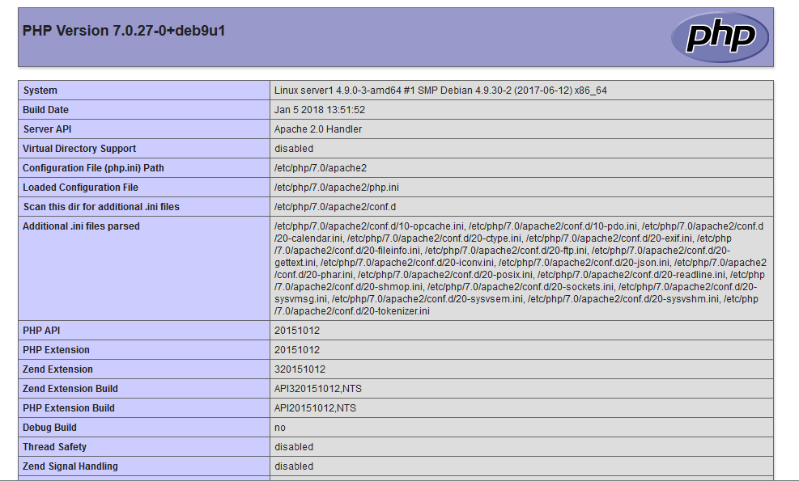

用LNMP很久了，这篇文章算是一个知识总结吧，初步计划会一直在本文章中更新Nginx的内容。
LNMP环境搭建
安装Nginx
首先，我们应该更新本地包索引，然后我们可以安装服务器
1 | sudo apt update |
在 Debian 中，Nginx安装完毕后将自动运行。Web浏览器中输入服务器IP地址，你将到Nginx的默认登陆页面：
安装mariaDB
当我们有了一个Web服务器，我们需要安装MySQL，MySQL是一个数据库管理系统，来存储和管理我们站点的数据。
您可以输入以下命令轻松安装：
1 | sudo apt install mariadb-server |
注意：在Debian 9中，MySQL项目的社区分支–MariaDB - 被打包为默认的MySQL变体。虽然MariaDB在大多数情况下运行良好，但如果您需要仅在Oracle的MySQL中找到的功能，则可以从MySQL开发人员维护的存储库中安装和使用软件包。要安装官方MySQL服务，请服用教程如何在Debian 9上安装最新的MySQL。
现在已安装MySQL数据库软件，但其配置不完整。
为了服务器安全，我们可以运行一个安全脚本，询问我们是否要修改一些不安全的默认值。键入以下命令开始脚本：
1 | sudo mysql_secure_installation |
系统将要求您输入MySQL root帐户的密码。我们还没有设置它，所以只需点击ENTER。然后，系统会询问您是否要设置该密码。您应该键入y然后设置root密码。
对于这个脚本询问的其他问题，您应该按y。这将删除一些匿名用户和测试数据库，禁用远程root登录，并加载这些新规则，以便MySQL立即更新您所做的更改。
此时，您的数据库系统现已设置好并受到安全保护。
安装PHP
我们现在已经安装了Nginx以服务我们的页面和安装的MySQL来存储和管理我们的数据。但是，我们仍然没有任何可以生成动态内容的工具。这就是PHP的用武之地。
现在我们来设置PHP。
由于Nginx不像其他一些Web服务器那样包含对PHP脚本的处理，因此我们需要安装fpm，它代表”fastCGI进程管理器”。我们将告诉Nginx将PHP请求传递给该软件进行处理。我们还将安装一个额外的帮助程序包，允许PHP与我们的MySQL数据库后端进行通信。安装将引入必要的PHP核心文件以使其工作。
安装php-fpm和php-mysql包：
1 | sudo apt install php-fpm php-mysql |
现在我们成功安装了PHP组件。接下来我们将配置Nginx以使用它们。
配置Nginx以使用PHP-fpm
现在我们已经安装了所有必需的组件。我们唯一需要的配置更改是告诉Nginx让我们的PHP处理器用于动态内容。
我们将保留默认的Nginx配置，创建一个新的配置文件和新的Web根目录来保存我们的PHP文件。我们将配置文件和目录命名为服务器的域名或主机名。
首先，创建一个新目录在/var/www下用来保存PHP站点：
1 | sudo mkdir /var/www/your_domain |
然后，在Nginx的sites-available目录中打开一个新的配置文件：
1 | sudo nano /etc/nginx/sites-available/your_domain |
这将创建一个新的空白文件。粘贴以下简单配置：
1 | server { |
这是一个非常基本的配置，它侦听端口80并从我们刚创建的Web根目录提供文件。它只会响应关键字server_name后提供的名称的请求，并且在Nginx将结果发送给用户之前，任何 .php 结尾的文件都将由进程 php-fpm 处理。
完成自定义内容的修改后保存并关闭文件。
通过软链接链接到Nginx sites-enabled目录中的配置文件来激活您的配置：
1 | sudo ln -s /etc/nginx/sites-available/your_domain.conf /etc/nginx/sites-enabled/ |
接着输入以下内容测试您的配置是否存在语法错
1 | sudo nginx -t |
如果报告了任何错误，请返回并重新检查您的文件，然后再继续。
准备好后，重新加载Nginx进行更改：
1 | sudo systemctl reload nginx |
接下来，我们将在新的Web根目录中创建一个文件来测试PHP处理。
创建PHP文件以测试配置
现在我们完全安装了LNMP。但是我们还是需要测试Nginx是否可以正确地将.php文件传递给PHP-fpm进行处理。
我们可以通过在文档根目录中创建测试PHP文件来完成此操作。创建info.php新文件，并添加内容：
1 | sudo nano /var/www/your_domain/info.php |
在新文件中键入或粘贴以下行。这是 PHP代码，它将返回有关我们服务器的信息：
1 |
|
修改完成后，保存并退出并修改权限。
1 | sudo chown -R www-data:www-data /var/www/your_domain/* |
现在，您可以通过在Web浏览器中访问服务器的域名或公共IP地址来访问此页面：
您应该看到PHP生成的网页，其中包含有关您的服务器的信息：

如果您看到一个看起来像这样的页面，那么您已成功搭建了LNMP环境。
在验证完LNMP环境正确的页面后，最好删除您创建的文件，因为它实际上可以向未经授权的用户展示您的服务器的配置，这可能会使得您的服务器被入侵。
现在，输入以下命令删除文件：
1 | sudo rm /var/www/html/info.php |
如果以后需要测试，您可以随时重新生成此文件。
Nginx基本操作
Nginx默认虚拟主机
当通过ip或者未知域名访问你的网站的时候，你希望禁止显示任何有效内容，可以给他返回500.
目前国内很多机房都要求网站主关闭空主机头，防止未备案的域名指向过来造成麻烦。就可以这样设置：
1 | server { |
其中default_server关键字就是指默认虚拟主机。
Nginx多站点
创建域名目录
首先在/var/www/下创建域名目录
1 | sudo mkdir /var/www/aaa.com /var/www/bbb.com |
这时/var/www/下是这样三个目录
html Debian默认配置的主目录
aaa.com 网站aaa.com的主目录
bbb.com 网站bbb.com的主目录
1 | $ls /var/www/ |
创建域名入口文件
在这里为了演示方便，我们可以直接在第二步的两个目录中分别创建 index.html 文件：
1 | sudo vim /var/www/aaa.com/index.html |
然后添加下面的内容：
1 | <html> |
对应的 bbb.com 我们可以这样：
1 | sudo vim /var/www/bbb.com/index.html |
在 bbb.com 这里添加下面的内容：
1 | <html> |
然后在/etc/nginx/sites-available/目录下添加配置文件
创建不同的配置文件
在安装完 Nginx 之后，Nginx 的默认配置文件是 /etc/nginx/sites-available/default ，我们要配置多站点的话，可以复制一份默认配置文件用来修改：
1 | sudo cp /etc/nginx/sites-available/default /etc/nginx/sites-available/aaa.com |
然后编辑 /etc/nginx/sites-available/aaa.com 配置文件：
删除不必要的配置内容和注释，大概修改成下面的配置：
1 | server { |
这样就配置完 aaa.com 了，接下来就照葫芦画瓢，我们修改 bbb.com 的配置文件，大概修改成一下内容便可：
1 | server { |
这样我们的两个域名配置文件就设置好了。
建立软链接
有了 aaa.com 和 bbb.com 的配置之后，我们需要启用这两个配置的使用：
1 | sudo ln -s /etc/nginx/sites-available/aaa.com /etc/nginx/sites-enabled/ |
执行上面的命令之后，我们再使用 nginx -t 检测 Nginx 的配置文件是否有错：
1 | sudo nginx -t |
如果你没有看到报错，就可以直接重启 Nginx 服务了：
1 | sudo systemctl reload nginx |
大功告成！
Nginx用户认证
有时候我们需要对一下web内容做一些访问限制，只有输入正确的用户密码才允许访问web内容。
当web上的一些内容不想被其他人知道，但是又想让部分人看到时，nginx的http auth模块以及Apache http auth都是很好的解决方案。
第1步 - 安装Apache Tools
因为需要htpassword命令来配置密码。而此命令是apache2-utils包的一部分，因此第一步是安装该程序包。
1 | sudo apt-get install apache2-utils |
步骤2 - 设置HTTP基本身份验证凭据
现在我们为运行网站的用户创建密码。
该密码和关联的用户名将存储在您指定的文件中。密码将被加密，文件名可以是您喜欢的任何名称。
我们创建并使用文件/etc/nginx/.htpasswd和用户名nginx。
要创建密码，请运行以下命令。您需要进行身份验证，然后指定并确认密码。其中参数 -c 是创建文件，以后要添加新用户要 去处-c ，不然会直接生成新文件而不是追加
1 | sudo htpasswd -c /etc/nginx/.htpasswd nginx |
查看文件中的用户名和散列密码。
1 | cat /etc/nginx/.htpasswd |
第3步 - 更新Nginx配置
既然已经创建了HTTP基本身份验证凭据文件，那么下一步就是更新Nginx配置来使用它。
使用nano或您喜欢的文本编辑器打开该文件。
1 | sudo nano /etc/nginx/sites-available/default |
在location部分下，添加两个指令：
1 | ... |
保存并关闭文件。
第4步 - 测试安装程序
要应用更改，请先测试Nginx配置文件是否有错。
1 | sudo nginx -t |
如果你没有看到报错，就可以直接重启 Nginx 服务了：
1 | sudo systemctl reload nginx |
现在尝试访问您刚刚保护的网站。您应该看到一个身份验证窗口（显示”Auth”，是设置的auth_basic关键字的值，），在您输入正确的凭据之前，您将无法访问该网站。如果输入您设置的用户名和密码，您将看到默认的Nginx主页。
加密admin目录
有些时候我们需要加密的目录是admin目录，或者一些内部专有目录，那么只要按照下面所示进行内容配置。
1 | ... |
Nginx域名重定向
有时候我们需要将test.com test1.com test2.com这几个域名都跳转到test.com，则需要这样配置test.com.conf文件
1 | server |
上述配置^/(.)$以及!=是正则表达式
语法规则：location [=|~|~|^~] /uri/ { … }
| 模式 | 含义 |
|---|---|
| location = /uri | = 表示精确匹配，只有完全匹配上才能生效 |
| location ^~ /uri | ^~ 开头对URL路径进行前缀匹配,~表示区分大小写。 |
| location ~ pattern | 表示区分大小写的正则匹配 |
| location ~* pattern | 表示不区分大小写的正则匹配 |
| location /uri | 不带任何修饰符，也表示前缀匹配，但是在正则匹配之后 |
| location / | 通用匹配，任何未匹配到其它location的请求都会匹配到 |
Nginx日志格式配置及日志审查操作
Nginx日志对于统计、系统服务排错很有用。Nginx日志主要分为两种：access_log(访问日志)和error_log(错误日志)。通过访问日志我们可以得到用户的IP地址、浏览器的信息，请求的处理时间等信息。错误日志记录了访问出错的信息，可以帮助我们定位错误的原因。
access_log(访问日志)
在 Debian中，Nginx预定义了名为combined日志格式，如果没有明确指定日志格式默认使用该格式：
1 | log_format combined '$remote_addr - $remote_user [$time_local] ' |
如果不想使用Nginx预定义的格式，可以通过log_format指令来自定义。
语法
1 | log_format name [escape=default|json] string ...; |
作用域
可以应用access_log指令的作用域分别有http，server，location，limit_except。也就是说，在这几个作用域外使用该指令，Nginx会报错。
以下是access_log指令的基本语法和参数的含义。
| 变量 | 含义 |
|---|---|
| $bytes_sent | 发送给客户端的总字节数 |
| $body_bytes_sent | 发送给客户端的字节数，不包括响应头的大小 |
| $connection | 连接序列号 |
| $connection_requests | 当前通过连接发出的请求数量 |
| $msec | 日志写入时间，单位为秒，精度是毫秒 |
| $pipe | 如果请求是通过http流水线发送，则其值为”p”，否则为”.” |
| $request_length | 请求长度（包括请求行，请求头和请求体） |
| $request_time | 请求处理时长，单位为秒，精度为毫秒，从读入客户端的第一个字节开始，直到把最后一个字符发送张客户端进行日志写入为止 |
| $status | 响应状态码 |
| $time_iso8601 | 标准格式的本地时间,形如”2018-05-24T18:31:27+08:00” |
| $time_local | 通用日志格式下的本地时间，如”24/May/2018:18:31:27 +0800” |
| $http_referer | 请求的referer地址。 |
| $http_user_agent | 客户端浏览器信息。 |
| $remote_addr | 客户端IP |
| $http_x_forwarded_for | 当前端有代理服务器时，设置web节点记录客户端地址的配置，此参数生效的前提是代理服务器也要进行相关的x_forwarded_for设置。 |
| $request | 完整的原始请求行，如 “GET / HTTP/1.1” |
| $remote_user | 客户端用户名称，针对启用了用户认证的请求 |
| $request_uri | 完整的请求地址，如 “https://sumi.ml/“ |
下面我们看一几个例子加深一下理解。
例如以下自定义格式，作用域是http
1 | ... |
紧接着重启Nginx以后访问网站并查看日志
1 | 127.0.0.1 - - [1/Nov/2018:14:07:20 +0800] "GET /favicon.ico HTTP/1.1" 401 597 "http://127.0.0.1/" "Mozilla/5.0 (X11; Linux x86_64) AppleWebKit/537.36 (KHTML, like Gecko) Chrome/70.0.3538.102 Safari/537.36" "-" |
我们看到最终的日志记录中$remote_user、$http_x_forwarded_for都对应了一个-，这是因为这几个变量为空。
error_log(错误日志)
错误日志在Nginx中是通过error_log指令实现的。该指令记录服务器和请求处理过程中的错误信息。
语法
配置错误日志文件的路径和日志级别。
1 | error_log file [level]; |
默认级别为error:
1 | error_log /var/log/nginx/error.log error; |
- 第一个参数指定日志的写入位置。
- 第二个参数指定日志的级别。level可以是debug, info, notice, warn, error, crit, alert,emerg中的任意值。可以看到其取值范围是按紧急程度从低到高排列的。只有日志的错误级别等于或高于level指定的值才会写入错误日志中。默认值是error。
基本用法
例子中指定了错误日志的路径为：/var/logs/nginx/nginx-error.log，日志级别使用默认的error。
error_log /var/log/nginx/error.log;
作用域
它可以配置在：main,http, mail, stream, server,location。
日志分割
自己写脚本
编写nginx日志分割脚本
1 |
|
设置定时任务运行脚本
sudo crontab -u root -e
内容如下
0 0 * * * /usr/local/nginx/logs/NginxLogRotate.sh
使用logrotate
Nginx日志过滤静态文件访问记录
1 | server { |
Nginx防盗链
首先去要理解什么是盗链
请求一个网页时，首先会传回该网页的文本内容，当客户端 浏览器在解析文本的过程中发现有图片资源需要展示时，会再次向服务器发起对该图片资源的请求，服务器将存储的图片资源再发送给客户端。
在上述过程中，如果别人的服务器上只包含了网页的文本内容，并没有存储相关的图片资源，而是将图片资源链接到你的站点的服务器上，那么你的服务器就会成为他人的资源池,这就形成了盗链行为
通常，我们不希望自己的服务器成为他人的资源池,所以需要做防盗链
1 | location ~* \.(gif|jpg|png|swf|flv)$ { |
Nginx referer指令语法说明
1 | valid_referers none | blocked | server_names | string …; |
1 | none："Referer" 来源头部为空的情况 |